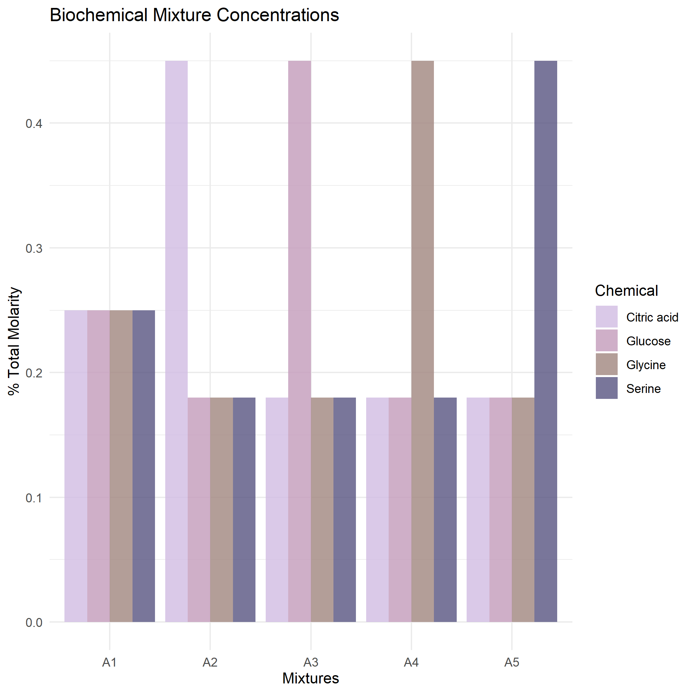
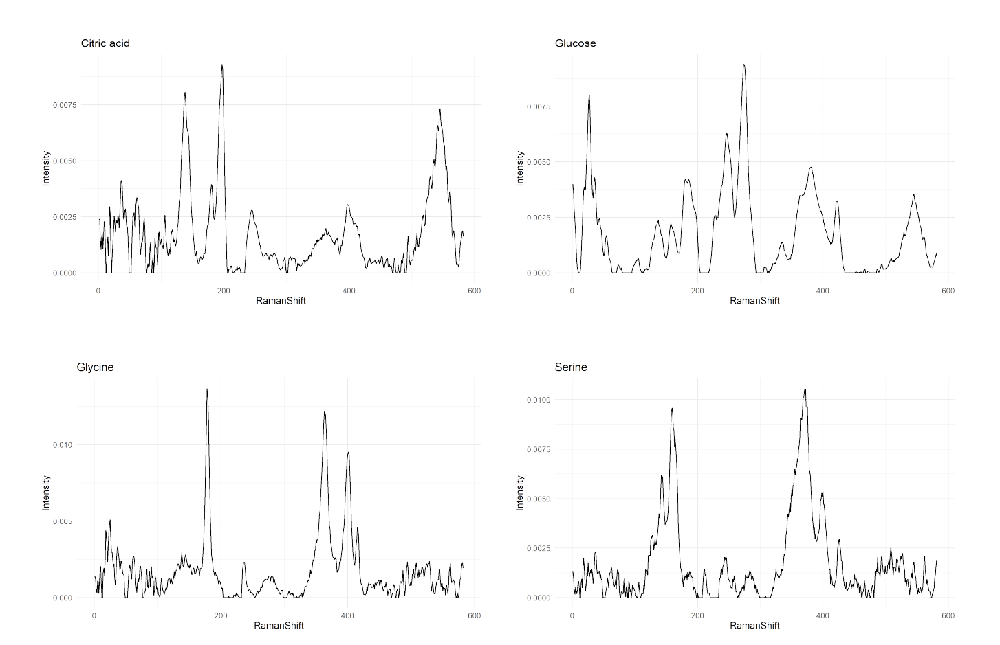
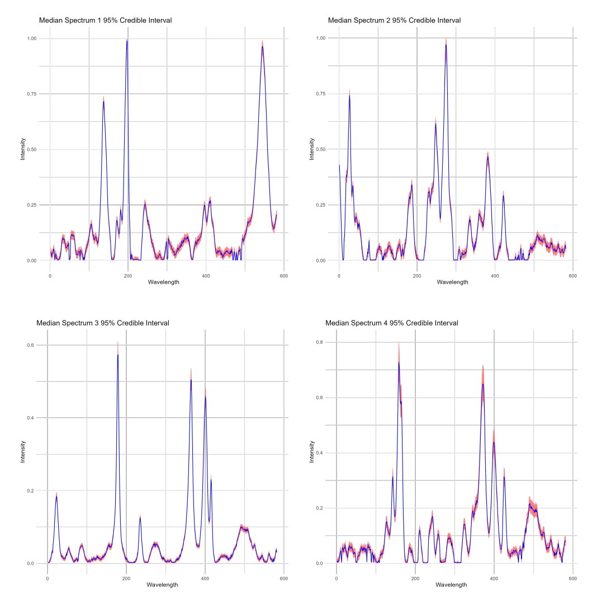
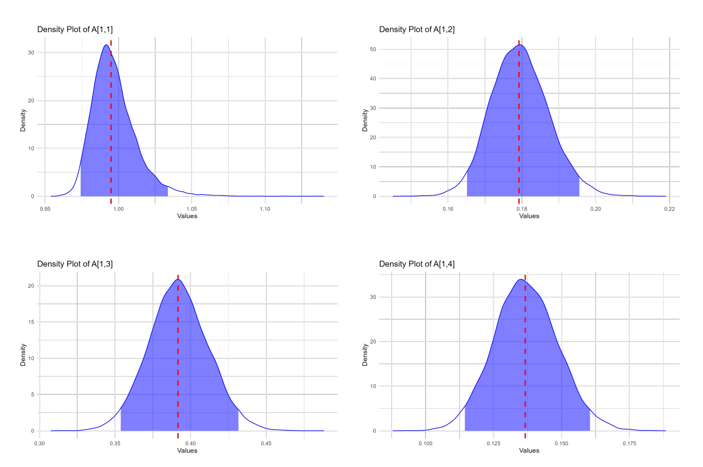

Biochemical Spectral Identification
Raman spectroscopy provides a unique biochemical fingerprint, but each measurement is inherently a mixture of multiple underlying chemical spectra. This project uses Bayesian positive source separation to unmix those constituent signals and quantify the uncertainty in each recovered component. The result is a more reliable and interpretable approach for identifying biochemical composition from complex Raman data. This work was part of my honours thesis for my undergraduate degree in Data Science at the University of British Columbia. Published in UBC Open Collections. Read the thesis..

Project Details
Keywords: Bayesian Statistics, Matrix Factorization, Chemometrics
Raman spectra capture the unique vibrational “fingerprints” of chemical compounds, allowing researchers to non-invasively identify the molecules present in a sample. Because many real-world materials contain multiple overlapping signals, interpreting these spectra is challenging and often requires statistical or machine learning methods to separate out the underlying chemical components.
This work develops a probabilistic approach for decomposing complex Raman spectra by combining group and basis restricted non-negative matrix factorization with Bayesian positive source separation. The method uses prior information to guide the model toward physically meaningful solutions while also estimating uncertainty, something standard NMF methods cannot provide. I conducted a sensitivity analysis to understand how prior choices affect performance, and then applied the model to real biochemical Raman data, showing that it accurately recovers the constituent signals along with credible intervals for their estimated contributions.
For a more detailed explanation of the project please see the notebook here (TODO)
Tech stack and methods:
- Technologies: R, JAGS, coda, ggplot2, tidyr
- Algorithms: Group-and-Basis-Restricted Nonnegative Matrix Factorization (GBR-NMF), Bayesian Positive Source Separation (BPSS)
Image Gallery

We looked at 5 mixtures of biochemicals with varying concentrations of each. The four chemicals were Citric Acid, Glucose, Glycine, and Serine, and each took turns being the majority chemical.
Here are the true Raman spectra for each of the four chemicals.
Here are the 95% credible intervals for the recovered spectra for each of the four chemicals.
Here are the 95% credible intervals for the concentrations of each chemical in one mixture.